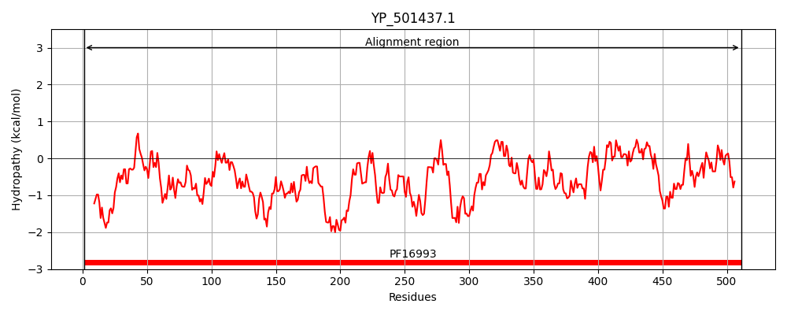
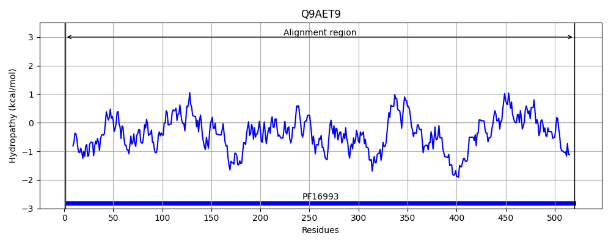
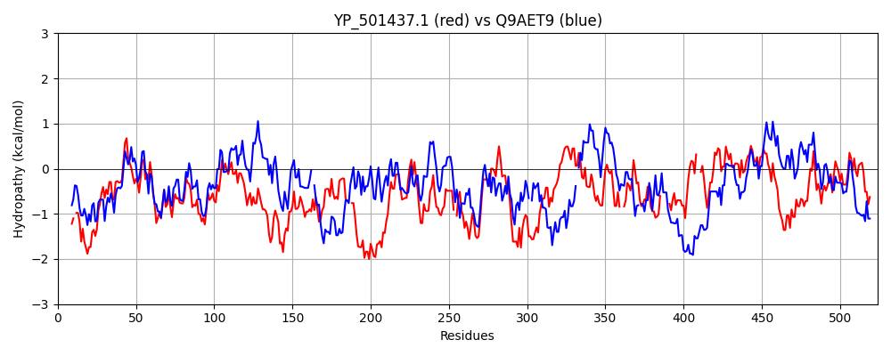

Hit Accession: Q9AET9
Hit TCID: 3.A.5.10.1
Hit Description: gnl|BL_ORD_ID|17727 gnl|TC-DB|Q9AET9|3.A.5.10.1 Accessory secretory protein Asp1 - Streptococcus gordonii.
Mach Len: 524
e:0.000000
Query TMS Count : 0
Hit TMS Count: 0
TMS-Overlap Score: 0.000000
Predicted Substrates:None
BLAST Alignment:
Score: 669 , Bit scores: 262 bits, E-value: 2.8e-81, Alignment length: 524, Percentage identity: 32
Query: 1 MKYFIPAWYDD-QRWWQDTTVPYYQLQNKTEFDDMISLMGMHLENDLDYQLIVLNHAPNLRTFLHRYDLYETKYSSVFDEIQGFSHHAPQAINYHHLKWPDDVEFVYTPYLLKCVTSEQTYTNIYFSQEGYSIWFEEFERDQLQRRYIFDDRGYLSAIRYFDDQGEASYQEYLTINGDCVLHEDLK--NGRVTVSKRYQHHYQQTEYNNMAQLIEEKFQAMIAQQIHEDDHVIVASDARHNRQIANHIPAKSLS-YSFFKNRNETVSDEEYQSIVKNAHLIVDSVQLERDLISHQEKYQRENTMIRITPFETRQSPNISSQLMETFIGVWIDGMSDADLQQMMQRLVDYIAQEDYYRLIL--LSRHQNDIPMWLRECITSVNEEYQ-----AKQNADVNVSALMTPEDQ--DDIIAVKTIHAEHDVVEALRTLRLVIDMSKEPDLYLQISAISAGIPQINGQQTDYVSDYDNGRIINTVDELDDALNYYLFYLKNWNYAYAYSLKLIDAYASKNIINQLDELIE 511
M YFIP+W +R W +P+Y+ + EFDD I + + +L +L++ + P+ R FLHR D++ET+Y SVFDEIQ + Q + L+W DD EF+YTP+L+ Q Y ++ F EG+ + + F+ DQL++ IFDDRG++S+I Y++D G+ Q+YL NGD + E LK N V V+ + + + EY M LI EK I+ + ED +VA+ N+ + + +P S S SFF RN+ + E ++ ++ A L++ ++ + + Q E + ++PF+TR S Q E+ I ID +S+ + +++ Y+AQ L++ + Q I + + + +Y K++ N + PE+Q + ++ I E +++ L RL+ID+S++P+LY QI+ ISAGIPQIN +DYV+ NG I++++ +L A +YYL LKNWN A YS++ I +I + ++ ++
Sbjct: 1 MYYFIPSWSGSGKRVWHRDIIPWYRSMQRLEFDDTIHQIRIFHSENLPVKLLLQAYMPHARYFLHRQDIFETEYYSVFDEIQAVESNDMQVLQIKDLEWEDDCEFIYTPFLIIVRRQGQLYAHVEFGVEGFISFIKFFKDDQLEKLNIFDDRGFVSSIVYYED-GQEVCQDYLNPNGDWRIREYLKFENSHVVVNPVFSRDFDKLEYECMPDLILEKLGYYISHNVEEDSRFVVAAQPFTNQGVLDLLPQHSHSILSFFHERNQASNIENLKADLEYADLVLTDRMDFKETLQNYFPLQAEK-IHYLSPFDTRLQLGKSQQRHESKIFYQID-LSELLNDYAIFKVLFYVAQHPDTELVIGVYNAWQEGIKQ-VENKVEELISDYLDLKDFIKKSFKNNQAENPLPENQELEYRFRIRNITDELSLIQELDDTRLIIDLSQQPNLYTQIAGISAGIPQINLVASDYVTHLQNGYILDSISQLAVAADYYLQGLKNWNQALIYSIEKIKLNTGHQVIKRWEKWLK 520 | Protein Hydropathy Plots: |
|---|
|  |  |
Pairwise Alignment-Hydropathy Plot:
|
|---|
|  |